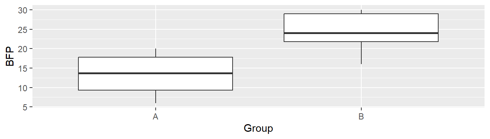

> ?mean3 Ein Beispielworkflow mit Skripten in R
Im Folgenden wird ein etwas umfangreicheres Beispiel mit nur kurzen Erklärungen exemplarisch vorgeführt. Eingehende Erläuterungen zu den verwendeten Befehlen kann in R mittels der Hilfedokumentation aufgerufen werden. Dazu wird lediglich ein ? vor den Funktionsnamen gestellt und R bzw. R-Studio öffnet die zu der Funktion gehörende Hilfedatei. Soll zum Beispiel die Hilfedokumentation für die Funktion mean() aufgerufen werden.
Es sei der folgende Datensatz aus Tabelle Tabelle 3.1 gegeben. In zwei unabhängigen Gruppen A und B wurde der Körperfettgehalt bestimmt. Nun soll untersucht werden, ob ein statistisch signifikanter Unterschied zwischen den beiden Gruppen besteht. Dies ist natürlich nur ein synthetisches Beispiel und sollte in dieser Form daher nicht im Rahmen einer tatsächlichen wissenschaftlichen Arbeit durchgeführt werden, sondern dient lediglich der Anschauung wie eine solche Analse in R durchgeführt werden könnte.
| Group | BFP |
|---|---|
| A | 13.3 |
| A | 6.0 |
| A | 20.0 |
| A | 8.0 |
| A | 14.0 |
| A | 19.0 |
| B | 22.0 |
| B | 16.0 |
| B | 21.7 |
| B | 210.0 |
| B | 30.0 |
| B | 26.0 |
| B | 30.0 |
Um eine Datenanalyse durchzuführen, müssen die Daten zunächst in R eingeladen werden. In der Rohform liegen die Daten in Form einer Textdatei vor. Die erste Spalte der Datei zeigt die Gruppenzugehörigkeit an, während die zweite Spalte den jeweiligen Fettgehalt beinhaltet. Die Spalten sind durch ein Komma voneinander getrennt und als Dezimaltrennzeichen, der internationalen Konvention folgend, wird ein Punkt verwendet.
Um die Daten in R zu laden wird eine spezielle Funktion aus dem Paket readr verwendet
Warnung
Wenn R mit dem Betriebssystem interagiert solltet ihr immer das Arbeitsverzeichnis (working directory) kennen. Dies bezeichnet das Verzeichnis, das R als sein Ausgangsverzeichnis betrachtet. Dementsprechend sind Pfadangaben entweder in Relation zu dem Arbeitsverzeichnis zu geben oder absolut. Das Arbeitsverzeichnis kann mit der Funktion setwd() (kurz für set working directory) verändert werden (in R-Studio auch über den Menüeintrag Session).
Nun wird das Paket readr geladen in dem zahlreiche Funktionen zum einlesen verschiedener Dateiarten hinterlegt sind. Wir laden die Datei mittels der Funktion read_csv() ein. read_csv() ist spezialisiert auf das einlesen von Komma-separierten Textfiles (comma-separated-v**alues).
> library(readr)
> bfp <- read_csv(file = 'bfp_data.txt')
> bfpDie Daten stehen nun unter dem Bezeichner bfp in R zur Verfügung. Der Name ist dabei wieder willkürlich gewählt und der Einfachheit halber kurz gehalten.
Die Daten sind in einem sogenannten data.frame-Objekt (bzw. der neueren Version tibble) abgelegt und können nun weiter verarbeitet werden. Beispielsweise kann mittels der Funktion summary() ein Überblick über deskriptiven Statistiken der Daten erzeugt werden.
> summary(bfp) Group BFP
Length:13 Min. : 6.00
Class :character 1st Qu.: 14.00
Mode :character Median : 20.00
Mean : 33.54
3rd Qu.: 26.00
Max. :210.00 Hier ist bereits zu sehen, dass einer der Datenpunkt wahrscheinlich fehlerhaft ist, da der Wert > 100 ist, was bei für einen prozentualen Körperfettanteil nicht möglich ist. Im nächsten Schritt sollen die Daten dann graphisch mittels eines Boxplots dargestellt werden. R stellt von Haus aus zahlreiche Funktion zur einfachen graphischen Darstellung bereit. Wir wollen hier aber auf das Paket ggplot2 zurückgreifen, welches die Erstellung moderner Graphiken in Publikationsqualität ermöglicht (Healy, 2018; Wickham, 2016). Vor der Verwendung muss das Paket wiederum zunächst geladen werden.
> library(ggplot2)
> ggplot(bfp, aes(Group, BFP)) + geom_boxplot()Im Boxplot in Abbildung Abbildung 3.1 ist der problematische Datenpunkt noch klarer ersichtlich und er verhindert gleichzeitig eine Analyse der Daten. Da wir keine weitere Information haben, durch welchen Wert wir den fehlerhaften Wert ersetzen könnten, schließen wir den Datenpunkt der Einfachheit halber aus. Dazu benutzen wir aus dem Paket dplyr die Funktion filter().
> library(dplyr)
> bfp_clean <- filter(bfp, BFP <= 100)
> bfp_clean# A tibble: 12 × 2
Group BFP
<chr> <dbl>
1 A 13.3
2 A 6
3 A 20
4 A 8
5 A 14
6 A 19
7 B 22
8 B 16
9 B 21.7
10 B 30
11 B 26
12 B 30 > ggplot(bfp_clean, aes(Group, BFP)) + geom_boxplot()
Die graphische Darstellung mittels eine Boxplots ist jetzt schon deutlich aussagekräftiger (siehe Abbildung Abbildung 3.2). Ohne jetzt weiter auf statistische Voraussetzungen einzugehen führen wir jetzt einen unabhängigen t-Test für Gruppen mit unterschiedlichen Varianzen. Dazu benutzen wir wieder eine Funktion aus R.
> t.test(BFP ~ Group, data = bfp_clean)
Welch Two Sample t-test
data: BFP by Group
t = -3.4017, df = 9.9886, p-value = 0.006762
alternative hypothesis: true difference in means between group A and group B is not equal to 0
95 percent confidence interval:
-18.040619 -3.759381
sample estimates:
mean in group A mean in group B
13.38333 24.28333 Wir dieses Beispiel zeigt, lässt sich in R mittels weniger Befehle eine Datenanalyse realisieren. Die Entwickler von R haben dabei darauf geachtet, dass die Namensgebung von Funktionen möglichst nahe an der gewünschten Tätigkeit liegt, so dass einen der englische Begriff meist schnell die Funktion herleiten lässt. Im Beispiel haben wir alle Befehlt direkt auf der Kommandozeile eingegeben und die Daten interaktiv analysiert. Bei einer tatsächlichen Analyse wird die Datenanalyse aus einer Kombination von interaktiven Arbeiten und permanenten Skripten bestehen. Beispielsweise würde diejenigen finalen Befehl die auf die Daten angewendet werden sollen in eine Skriptdatei geschrieben werden, so dass die Analyse zu einem späteren Zeitpunkt wieder aufgegriffen bzw. nachvollziehbar ist. So könnte der gezeigte Workflow in das folgende Skript münden:
# Notwendige Bibliotheken
library(readr)
library(ggplot2)
library(dplyr)
# Daten einlesen
bfp <- read_csv(file = 'bfp_data.txt')
# Daten bearbeiten
bfp_clean <- filter(bfp, BFP <= 100)
# Deskriptiv
summary(bfp_clean)
# Graphiken
ggplot(bfp_clean, aes(Group, BFP)) + geom_boxplot()
# Analyse
t.test(BFP~Group, data = bfp_clean)Die Abfolge der Befehle in dem Skript sind durch die Verwendung von Kommentaren, die in R mit einem # signalisiert werden, noch besser nachvollziehbar. Dieses Skript könnte zusammen mit den Daten abgespeichert werden und bleibt dann zu jedem Zeitpunkt ausführbar.